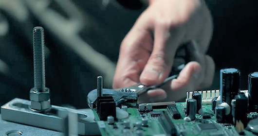

SOLUTION / 산업별 신뢰성 솔루션
기판과 부품의 온도 사이클, 가속수명 시험부터 AI 서버 같은 고발열 장비 시험까지. 시험 대상 크기와 조건에 맞는 장비를 안내합니다.

전자 기판 조립 장면, ESPEC 자료
제품 사양은 ESPEC 공개 자료(수집일 2026-10-29) 기준입니다. 열충격 시험 등 다른 시험이 필요하면 시험 조건을 알려 주세요. 맞는 장비를 안내합니다.
ESPEC 제품 소개에 기재된 규격입니다. 시험 조건별 적용 여부는 상담 시 함께 확인해 드립니다.
맞는 장비와 견적을 안내합니다. 전화 상담 02-557-0505